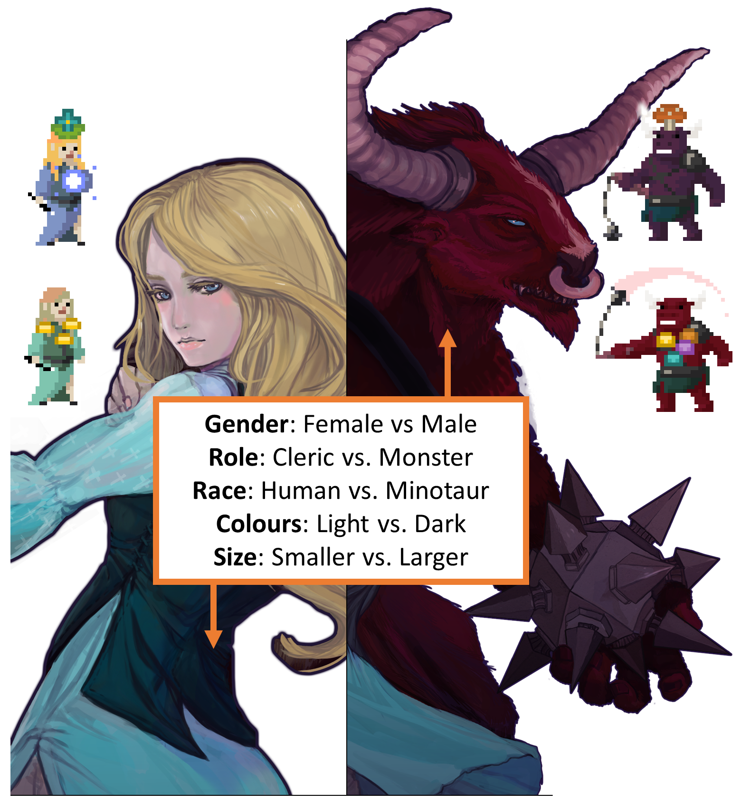

Tina Chan
HCI Researcher - Illustrator - Innovator
HCI Researcher - Illustrator - Innovator


I completed my MSc in Human-Computer Interaction at the University of Waterloo using research through design to explore solutions to mental health issues.
Currently, I am self-employed on my passion-project turned social venture (PASS inc.) and am continually learning to tackle "wicked" problems within complex systems.
Chan, T., & Wallace, J. R.. (2018). Changing Peer Support Attitudes with Avatar-based Gamification. In Computer Human Interaction. Association for Computing Machinery.
Chan, T., McMurray, J., Wallace, J. R., & Sidahmed, A.. (2018). SmartSurveys: Does context influence whether we'll share healthcare experience data with our smartphone? . In ACM Conference on Interactive Surfaces and Spaces 2018. Association for Computing Machinery.
Chan, T., McMurray, J., Levy, A. Marie, Wallace, J. R., & Sveistrup, H.. (2020). Post-Hackathon Learning Circles: Supporting Lean Startup Development. In CHI 2020.
As my Masters Thesis project, I designed and developed a computer game called Merlynne to investigate the effect of avatar stereotypes on prosocial behaviour in virtual environments. Merlynne asked players to provide advice to reddit queries to advance narrative within a fantasy game environment. Findings from a mixed-methods study suggested that stereotypically helpful avatars motivated empathetic advice.
OCT 2017 - SEPT 2019
As a researcher, I conducted a mixed-methods study using automatically logged usage data from Unity and semi-structured interviews with players.
I conducted a mixed-methods, exploratory study to evaluate Merlynne's design and specifically studied the Proteus Effect, hypothesizing that players using a stereotypically helpful avatar would have higher usage rates and a higher change in helping attitudes scores (HAS) than players using a stereotypically unhelpful avatar.
Findings were to be interpreted as design suggestions to improve online mental health platform engagement, an identified problem in literature and industry.
Early discussions with mental health and education groups supported the idea of gamified peer support, with additional interest in the way male-identifying individuals used online peer support services. We had wished to use real-time reddits posts on university subreddits -available publically- however, due to ethics limitations of our institution's research ethics board, it was important for posts to be untraceable. In agreement of the concern, we instead paraphrased reddit posts to be representative of themes discussed on choice subreddits. Participants were convinced of its authenticity in interviews.
Early proofs of concepts of different games were presented for roundtable discussions with HCI experts generating feedback. Raised issues included problematic narratives and incentives to cheat. As a solution, we consulted literary expertise and involved social elements to dissuade cheating.

Early prototypes of Merlynne then underwent playtests with graduate student colleagues using talk-alouds and interviews. Confusions in flow and causes of breaks in immersion were identified, and changes were applied between each playtest.
For the purpose of my MSc research on the Proteus Effect, two avatar conditions (Monster and Cleric) were created based on literary research from the media arts field with feedback from peers studying language in gaming. 
A 2 hr in-lab study was held, with 36 male participants recruited from a graduate mailing list and posters from the University of Waterloo campus. Participants completed pre-post surveys containing HAS scales before and after a 30-40 minute play session using a random avatar condition, followed by a semi-structured interview.
Peer support responses collected in-game from participants were assessed for adherence to CBT format by three researchers (with high inter-rater reliability). Data-driven thematic analysis using open and axial coding was used to interpret interviews, supported by inferential statistics with non-parametric tests (Mann Whitney U) of usage data including aformentioned responses coded for CBT format adherence.
Through this project, I adopted a systems-based thinking due to the many moving parts (development, content, research, feedback) within a short time frame. A major personal takeaway was the need to self-organize and learn quickly .
Specific to technical development, there were many Unity techniques I later learned which would have benefited Merlynne such as linking all text objects to a database (e.g. Firebase, or a spreadsheet) for easier content management, using tags to classify NPCs, and using Scriptable Objects to manage the status of interactive objects.
I would have also stored the incoming data natively to an excel spreadsheet to reduce the risk of losing Google conenctivity or the status of my account if it were to be used by future researchers.
The following questions were identified:
The Panic, Anxiety, and Stress Support (PASS) kit was born out of my undergraduate thesis research exploring methods to bring stress management symptoms to students during moments of high stress. Each kit includes a squeezable stress star, ear plugs, a sleeping mask, a pack of gum and a deck of 25 flash cards with steps a person can take when they are experiencing anxiety or stress symptoms.
2016 - now
As a product designer, I balanced costs with customer needs to design, resource, and develop products which have been sold worldwide, leading to a profitable business.
*As the company founder, I took on many, many other roles including accounting, sales, and team management.
Variations over the years are documented below.


In cooperation with climate scientists at the University of Waterloo, I advised the user-experience and created art assets in Illuminate, an interactive public display for a family audience which highlighted hope in a future with climate change.
OCT - DEC, 2019
As lead artist, I worked concurrently with the developer, performed user-testing, and designed an art style (ie. line weight, colour) friendly to non-artists tasked with scaling the Illuminate project in the future.
 Coastal context
Rural context
Coastal context
Rural context
Recurring meetings took place within the production team (writer, developer, artist), and research team (writer, administrative staff, IC3) to support concurrent workflow. Communications were exchanged internally on Slack and externally via email and a shared OneDrive. The management system was consistently used and effectively led to a scalable prototype developed by the time the writing was finalized.
The developer and I (artist) were not scheduled to continue our contracts, thus if new modules were to be added post-January, both the game environment and the art assets must be scalable. In the case no new programming and art talent was available, it was ensured all future assets could be added within the game engine's environment (Unity) without scripting, and a low-barrier art style was used. Barriers to artwork were seen as poor art fundamentals such as (1) line control; (2) colour theory; and (3) drawing from memory. Thus, art style chosen used feathered brushes which did not require precise line weight control, a colour palette was pre-chosen for future art, and realistic proportions were used for future artwork to be produced through rotoscoping.
MUSEUM space
 Game loops were kept short (30 secs to 2 min play), asking players only three questions each landscape scenario, with 3-4 options per question to ensure replayability. A second monitor with a trailer video was also set up to display potential gameplay to passersby to garner interest in interacting.
Game loops were kept short (30 secs to 2 min play), asking players only three questions each landscape scenario, with 3-4 options per question to ensure replayability. A second monitor with a trailer video was also set up to display potential gameplay to passersby to garner interest in interacting.
TBA.
A finished prototype of one landscape (coastal) was presented as a demo to IC3, and narrative and artwork of remaining landscapes were presented as text and image files. Through email discussions and a working shared spreadsheets file, IC3 provided feedback in writing with relevant sources. Narrative and artwork was updated with their insight.
External to the core team, testing was performed on student volunteers in the Games Institute over lunch on their personal mobile devices. Students were asked to play through scenarios and voice aloud their thoughts and concerns during the playthroughs. Inconsistencies between narrative and art were brought up, as well as minor confusions in UI (e.g. buttons were not obviously leading to intended screens). Changes were applied quickly from testing and tested again internally before launching.
I prioritized art assets for the Illuminate interface, but in retrospect the art should have considered the installation concept as a whole from print advertisements to video trailers. The colour schemes and iconography chosen for the gameplay were lighter in colour and storybook-like to appeal to both children (storybook readers) and adults (storybook buyers). Although effective for the visual-novel game interface, the style may not be as attractive to the passerby in a busy public space, especially when compared to previous displays by the Games Institute like Quantum Cats, which has graphics easily translatable to its promotional materials.
In the future I would also use vectors for images for better scaling across different screen sizes and I would be interested in exploring the .psb file setting instead of saving each layer (through batch processing script) to be imported into Unity to enable animations.
Hackathons provide rapid, hands-on opportunities to explore innovative solutions to problems, but provide little support to teams in moving those solutions into practice. We explore the use of post-hackathon Learning Circles to connect hackathon teams with key stakeholders, to reflect on prototypes and consider business models. We conducted a qualitative field study with 4 post-hackathon teams on the theme of technology, social isolation, and aging. Our results show that Learning Circles are an effective way to involve stakeholders early in the development process, and to develop a deeper understanding of users, markets, and technology.
APR - DEC, 2019
I implemented SmartSurveys, a research tool prompting consumers to provide service feedback via smartphones based on geographic location ('geolocation'). The study goal was to identify addressable barriers that impact the adoption of smartphone technology to gather patient experience data in health care spaces.
APR 2017 - DEC 2018
As a researcher, I wrote provincial grants (OCE) and ethics applications to two university boards (Wilfrid Laurier University (WLU), University of Waterloo (UW)), while creating the SmartSurveys and its onboarding materials with app developers (MetricWire).

MetricWire is a data collection tool developed in Kitchener-Waterloo by the startup MetricWire Inc., who were also collaborators on the NSERC-Engage grant funding SmartSurveys. In regular meetings with the MetricWire team, I came to discover the limitations and opportunities with their tool concurrently with their startup development.
Participants were recruited online and directed to enroll in the SmartSurveys study on the MetricWire app through a one-page website. The website linked to consent letters and installation guides hosted on Google Drive. When SmartSurveys was installed, participants would complete an intro survey to complete enrollment, then be given surveys through MetricWire every time they dwelled in a geofenced location.
 Automatically measured variables included situated usage data such as time spent in a geographic area, time between entering a location and submitting feedback, and between the time of exit and feedback submission. Overall activity data like the number of submissions, and the number of words per submission was also tracked to be compared between locations.
Automatically measured variables included situated usage data such as time spent in a geographic area, time between entering a location and submitting feedback, and between the time of exit and feedback submission. Overall activity data like the number of submissions, and the number of words per submission was also tracked to be compared between locations.
I trained two undergraduate research assistants to collect the geographical coordinates and radial size of service providers in Kitchener-Waterloo based on Google map data.
Four lists of geofences were created, containing 100-150 locations on each list.
* On the WLU or UW campus
** In the Kitchener-Waterloo region

After the locations were programmed into the SmartSurveys tool, we tested the sensitivity of the MetricWire app to geofences on foot using different smartphones and operating systems (iPhone, Android).
There were overlapping geofences due to multi-service buildings with multiple floors with different services. It was difficult to differentiate services leading to the over-triggering of surveys. As a solution, an extra question was asked in multi-service buildings asking participants to indicate where they were in a form field.
Some geofences also did not fire when entered, as Android phones were not registering the geofence as quickly to save battery life. This posed as a study problem as iPhone and Android users would have inconsistent participant experiences. As a short-term fix, I changed the trigger from 'dwelling in an area' to 'exiting an area' to at least ensure all participants received notifications after service provision instead of some during and some after.
One major barrier to implementation was the inconsistency of geofences firing for different smartphone users. Despite the investment in tool setup, I would have explored other ways to measure contextual sensitivity.
The study could have sent participants surveys to complete through MetricWire according to a predetermined time schedule. Participants would report where they were and offer feedback if willing. Although less relevant data points may be collected (e.g. if the participant was at home most of the survey times), it would have been independent of GPS error.
LIFEHACK was created by youth at a hackathon in Ulaanbataar to educate Mongolian students on the effects of daily choices based on the creators' own experiences. Identified roadblocks in translating the idea into a commercial game led to my involvement with the project as a consultant. LIFEHACK incorporated my suggested interative design methods to reduce future costs.
SEPT - NOV , 2018
As a researcher, I documented methods and findings for presentation at a local conference, and identified the lessons learned which can be applied to other global health projects.

It became known in future meetings that a prototype needed to be developed for LIFEHACK to renew funding from Unicef Mongolia, thus the short runway for development was acknowledged.
In review of the LIFEHACK's vision, resources, and talent, the teams' strengths laid in their lived experiences as youth growing up in Mongolia, connections to experts in Unicef Mongolia, and artistic talent (graphic design, photography, writing).
Through two more video calls, we further understood the vision of LIFEHACK to bring the game into middle school classrooms, and shared our intentions to use concepts from Self-Determination Theory (SDT) and iterative testing in the SDLC to help them develop their project.

All opinions were presented as suggestions in the interest of faster development, and it was made clear that they were to prioritize their vision if they saw conflict in suggestions.
This consultation effort was presented as a poster as an example of global collaboration health research and game development.
It was assumed that the availability of developers and classrooms in Mongolia were similar to the Canadian environment. If time and opportunity had allowed it, it would have been worthwhile understanding the startup and game development ecosystem (e.g. talent costs) in Ulaanbaatar outside of LIFEHACK's experiences to provide more insightful advice.
xoxox